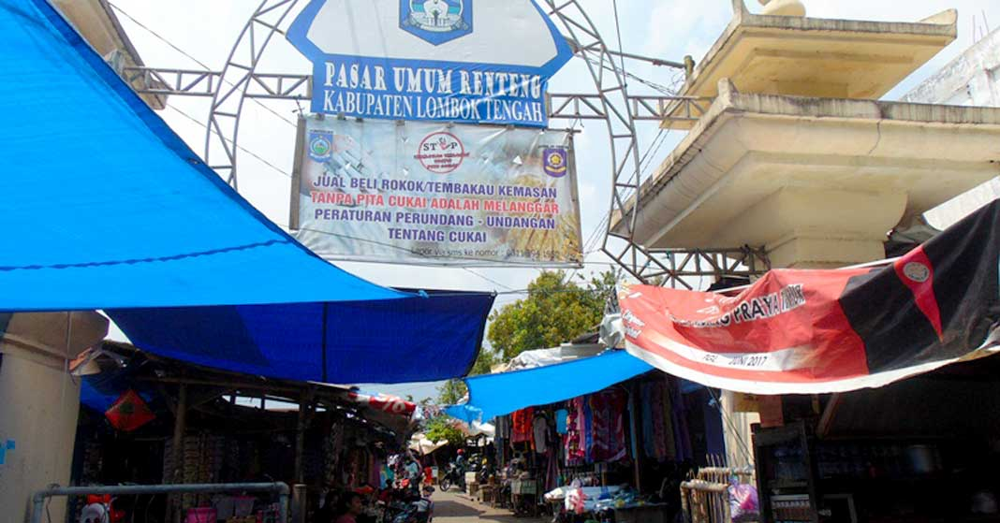
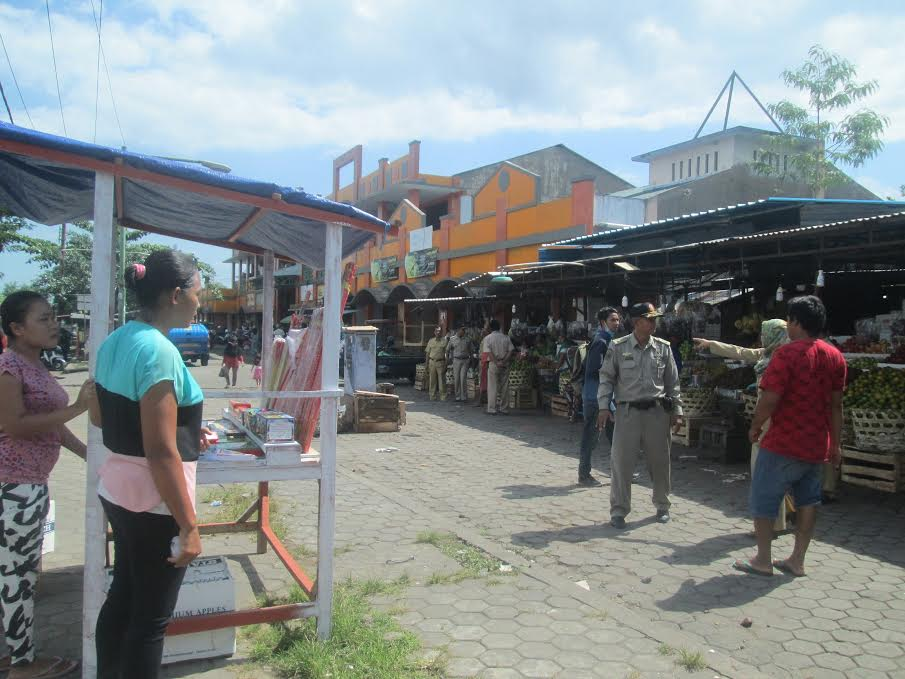

<!DOCTYPE html>
<html>
<head>
	<title>Map Marker</title>
	<meta charset="utf-8">
	<link rel="stylesheet" type="text/css" href="asset/leaflet/leaflet.css">
	<script src="asset/leaflet/leaflet.js"></script>
	<script src="json/kecpraya.js"></script>
	<style>
		html, body {
			height: 100%;
			width: 100%;
			margin:0;
			padding: 0;
		}
		#map {
			width: 100%;
			height:100%;
		}
		.leaflet-popup-content {
			width:auto !important;
		}

	</style>
</head>
<body>
<div id="map"></div>
<script>

	//##############################################//
	// Membuat Icon Pada Peta 
	//##############################################//
	var mapIcon = L.Icon.extend({
	    iconSize:     [32, 37]
	});
	var masjidIcon = new mapIcon({iconUrl: 'icon/mosquee.png'}),
	    pasarIcon = new mapIcon({iconUrl: 'icon/market.png'}),
	    sekolahIcon = new mapIcon({iconUrl: 'icon/school.png'});

	//##############################################//
	// Mendeklarasikan Marker Masjid dan membuatnya menjadi 
	// Layer Group
	//##############################################//
	
	var mj1 = L.marker([-8.70255, 116.26714],{icon: masjidIcon}).bindPopup('Masjid Agung Praya');
	var mj2 = L.marker([-8.71077, 116.27883],{icon: masjidIcon}).bindPopup('Masjid Jami');
	var mj3 = L.marker([-8.6965725, 116.2826282],{icon: masjidIcon}).bindPopup('Masjid Al-Istikomah');
	var mj4 = L.marker([-8.6981617, 116.2854233],{icon: masjidIcon}).bindPopup('Masjid Darul Mutaqin');

	var masjid = L.layerGroup([mj1, mj2, mj3, mj4]);

	//##############################################//
	// Mendeklarasikan Marker Sekolah dan membuatnya menjadi 
	// Layer Group
	//##############################################//
	var sk1 = L.marker([-8.69835, 116.28224],{icon: sekolahIcon}).bindPopup('STMIK Lombok');
	var sk2 = L.marker([-8.69777, 116.28200],{icon: sekolahIcon}).bindPopup('YANMU Praya');

	var sekolah = L.layerGroup([sk1, sk2]);

	//##############################################//
	// Mendeklarasikan Marker Pasar dan membuatnya menjadi 
	// Layer Group
	//##############################################//
	var psr1 = L.marker([-8.69415, 116.26584],{icon: pasarIcon}).bindPopup("Pasar Renteng ");
	var psr2 = L.marker([-8.71188, 116.28291],{icon: pasarIcon}).bindPopup("Karang Bualayak ");

	var pasar = L.layerGroup([psr1, psr2]);

//var popupRenteng = "";


	//##############################################//
	// Membuat BaseMap Pada Peta
	//##############################################//

	var mbAttr = 'Map data &copy; <a href="https://www.openstreetmap.org/">OpenStreetMap</a> contributors, ' +
			'<a href="https://creativecommons.org/licenses/by-sa/2.0/">CC-BY-SA</a>, ' +
			'Imagery © <a href="https://www.mapbox.com/">Mapbox</a>',
		mbUrl = 'https://api.tiles.mapbox.com/v4/{id}/{z}/{x}/{y}.png?access_token=pk.eyJ1IjoibWFwYm94IiwiYSI6ImNpejY4NXVycTA2emYycXBndHRqcmZ3N3gifQ.rJcFIG214AriISLbB6B5aw';

	var streets  = L.tileLayer(mbUrl, {id: 'mapbox.streets',   attribution: mbAttr});

	//##############################################//
	// Mendeklarasikan Peta kedalam Id Map
	//##############################################//
	var map = L.map('map', {
		center: [-8.6416479, 116.3522657],
		zoom: 11,
		layers: [streets]
	});

	//##############################################//
	// Mendeklarasikan BaseLayer Pada Map yakni Street
	//##############################################//
	var baseLayers = {
		"Streets": streets
	};

	var kelpraya = L.geoJSON([kelpraya], {
		style: function (feature) {
			return feature.properties && feature.properties.style;
		}
	});
	var leneng = L.geoJSON([leneng], {
		style: function (feature) {
			return feature.properties && feature.properties.style;
		}

	});
	var prapen = L.geoJSON([prapen], {
		style: function (feature) {
			return feature.properties && feature.properties.style;
		}
		
	});
	var panjisari = L.geoJSON([panjisari], {
		style: function (feature) {
			return feature.properties && feature.properties.style;
		}
		
	});
	var batukliangutara = L.geoJSON([btklu], {
		style:function(feature){
			return feature.properties && feature.properties.style;
		}
	});
	var batukliang = L.geoJSON([btkl], {
		style:function(feature){
			return feature.properties && feature.properties.style;
		}
	});
	var kopang = L.geoJSON([kpg], {
		style:function(feature){
			return feature.properties && feature.properties.style;
		}
	});
	var janapria = L.geoJSON([jnp], {
		style:function(feature){
			return feature.properties && feature.properties.style;
		}
	});
	var jonggat = L.geoJSON([jgt], {
		style:function(feature){
			return feature.properties && feature.properties.style;
		}
	});

	var pringarata = L.geoJSON([pggt], {
		style:function(feature){
			return feature.properties && feature.properties.style;
		}
	});
	var praya = L.geoJSON([praya], {
		style:function(feature){
			return feature.properties && feature.properties.style;
		}
	});
	var prabarda = L.geoJSON([prabarda], {
		style:function(feature){
			return feature.properties && feature.properties.style;
		}
	});
	var prabar = L.geoJSON([prabar], {
		style:function(feature){
			return feature.properties && feature.properties.style;
		}
	});

	var prateng = L.geoJSON([prateng], {
		style:function(feature){
			return feature.properties && feature.properties.style;
		}
	});
	var pratim = L.geoJSON([pratim], {
		style:function(feature){
			return feature.properties && feature.properties.style;
		}
	});
	var pujut = L.geoJSON([pjt], {
		style:function(feature){
			return feature.properties && feature.properties.style;
		}
	});
	//##############################################//
	// Deklarasi untuk memilih Icon yang akan ditampilkan
	//##############################################//
	var overlays = {
		"Masjid": masjid,
		"Sekolah": sekolah,
		"Pasar" : pasar,
		// "Kelurahan Praya ": kelpraya,
		// "Kelurahan Leneng": leneng,
		// "Keluranan Prapen": prapen,
		// "Keluranan Panjisari": panjisari,
		// Kecamatan
		"Kec. Batuklaiang Utara": batukliangutara,
		"Kec. Batuklaiang": batukliang,
		"Kec. Kopang": kopang,
		"Kec. Janapria": janapria,
		"Kec. Pringarata": pringarata,
		"Kec. Jonggat": jonggat,
		"Kec. Praya": praya,
		"Kec. Praya Barat Daya": prabarda,
		"Kec. Praya Barat": prabar,
		"Kec. Praya Tengah": prateng,
		"Kec. Praya Timur": pratim,
		"Kec. Pujut": pujut,
	};

	//##############################################//
	// Menambah  variabel baselayaer dan overlay kedalam map
	//##############################################//
	L.control.layers(baseLayers, overlays).addTo(map);

	//##############################################//
	// Menbambil data geospesial wilayak kecamatan praya
	//##############################################//
	L.geoJSON([btskab], {
		style: function (feature) {
			return feature.properties && feature.properties.style;
		}
	}).addTo(map);
</script>
</body>
</html>